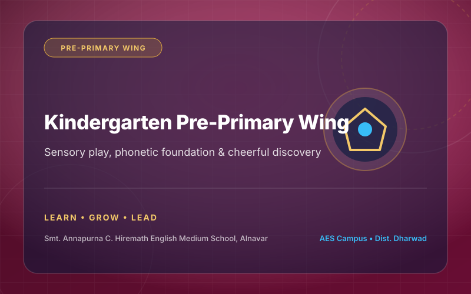
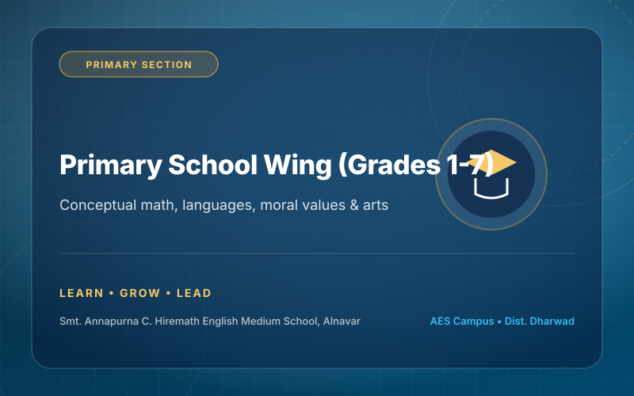
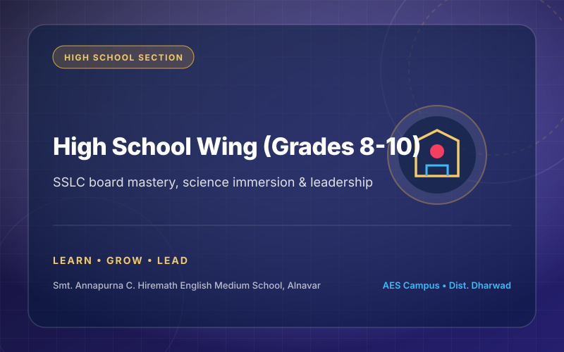

Pre-Primary Kindergarten Wing
Our Kindergarten wing provides a joyful, sensory-rich environment where young children build phonemic awareness, fine motor coordination, social empathy, and early mathematical reasoning through guided play and discovery.
- ✓ Jolly Phonics and interactive story-telling circles
- ✓ Safe indoor play equipment and Montessori-inspired sensorial kits
- ✓ Gentle social habits, personal hygiene, and emotional well-being

Primary School Academic Wing
The Primary section deepens linguistic fluency across English, Kannada, and Hindi while instilling solid conceptual grounding in mathematics, environmental studies, general science, and computer operations.
- ✓ Multilingual fluency with dedicated language laboratory practice
- ✓ Experiential science demonstrations and environmental projects
- ✓ Moral science, value education, and weekly arts integration

High School Academic Wing
Our High School curriculum provides rigorous preparation for the Karnataka SSLC Board examinations, combining deep subject immersion, laboratory testing, model question blueprints, and leadership training.
- ✓ Specialized Physics, Chemistry, and Biology practical labs
- ✓ Continuous formative assessments & simulated board preparatory tests
- ✓ Career guidance, NTSE/Olympiad support, and student parliament

Evaluation & Board Prep Structure
A balanced continuous evaluation system designed to reduce exam stress while guaranteeing board excellence.
Formative Assessments (FA 1 to 4)
Periodic diagnostic tests, creative assignments, oral quizzes, laboratory journal submissions, and group project presentations evaluating ongoing student mastery.
Summative Assessments (SA 1 & 2)
Mid-term and end-of-term comprehensive examinations evaluating semester-wide theoretical knowledge, problem-solving, and analytical depth.
SSLC Preparatory Series
Series of 3 state-level simulated board examinations for Grade 10 candidates under strict board conditions, complete with individual error-analysis sessions.